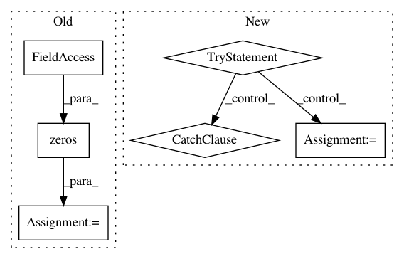

245e356064ab70304b688519e7b5103f2b1b71c1,gpytorch/models/exact_prediction_strategies.py,DefaultPredictionStrategy,get_fantasy_strategy,#DefaultPredictionStrategy#Any#Any#Any#Any#Any#,90
Before Change
lower_left = fant_train_covar.matmul(L_inverse)
schur_root = torch.cholesky(fant_fant_covar - lower_left.matmul(lower_left.transpose(-2, -1)))
upper_right = torch.zeros(m, schur_root.size(-1), device=L.device, dtype=L.dtype)
// Form new root Z = [L 0; lower_left schur_root]
num_fant = schur_root.size(-2)
m, n = L.shape[-2:]
new_root = torch.zeros(*batch_shape, m + num_fant, n + num_fant, device=L.device, dtype=L.dtype)
new_root[..., :m, :n] = L
new_root[..., :m, n:] = upper_right
new_root[..., m:, :n] = lower_left
new_root[..., m:, n:] = schur_root
// Use pseudo-inverse of Z as new inv root
After Change
new_root[..., m:, n:] = schur_root
// Use pseudo-inverse of Z as new inv root
try:
Q, R = torch.qr(new_root)
Rdiag = torch.diagonal(R, dim1=-2, dim2=-1)
// if R is almost singular, add jitter (Rdiag is a view, so this works)
zeroish = Rdiag.abs() < 1e-6
if torch.any(zeroish):
Rdiag[zeroish] = 1e-6
new_covar_cache = torch.triangular_solve(Q.transpose(-2, -1), R)[0]
except RuntimeError as e:
// TODO: Deprecate once batch QR supported in latest torch stable
if "invalid argument 1: A should be 2 dimensional" not in e.args[0]:
raise e
cap_mat = new_root.transpose(-2, -1).matmul(new_root)
if cap_mat.requires_grad or new_root.requires_grad:
new_covar_cache = torch.solve(new_root.transpose(-2, -1), cap_mat)[0]
else:
new_covar_cache = torch.cholesky_solve(new_root.transpose(-2, -1), torch.cholesky(cap_mat))
new_covar_cache = new_covar_cache.transpose(-2, -1)
// Expand inputs accordingly if necessary (for fantasies at the same points)
if full_inputs[0].dim() <= full_targets.dim():
In pattern: SUPERPATTERN
Frequency: 3
Non-data size: 6
Instances
Project Name: cornellius-gp/gpytorch
Commit Name: 245e356064ab70304b688519e7b5103f2b1b71c1
Time: 2019-07-15
Author: balandat@fb.com
File Name: gpytorch/models/exact_prediction_strategies.py
Class Name: DefaultPredictionStrategy
Method Name: get_fantasy_strategy
Project Name: pymc-devs/pymc3
Commit Name: 5b2766aae94c0615aef2c8d6ac178428e6d28745
Time: 2008-07-20
Author: fonnesbeck@15d7aa0b-6f1a-0410-991a-d59f85d14984
File Name: pymc/database/mysql.py
Class Name: Trace
Method Name: tally
Project Name: rtavenar/tslearn
Commit Name: bc93cb5618026383b21ef4feb4a345af51a9ace8
Time: 2017-05-24
Author: romain.tavenard@univ-rennes2.fr
File Name: tslearn/clustering.py
Class Name: GlobalAlignmentKernelKMeans
Method Name: fit